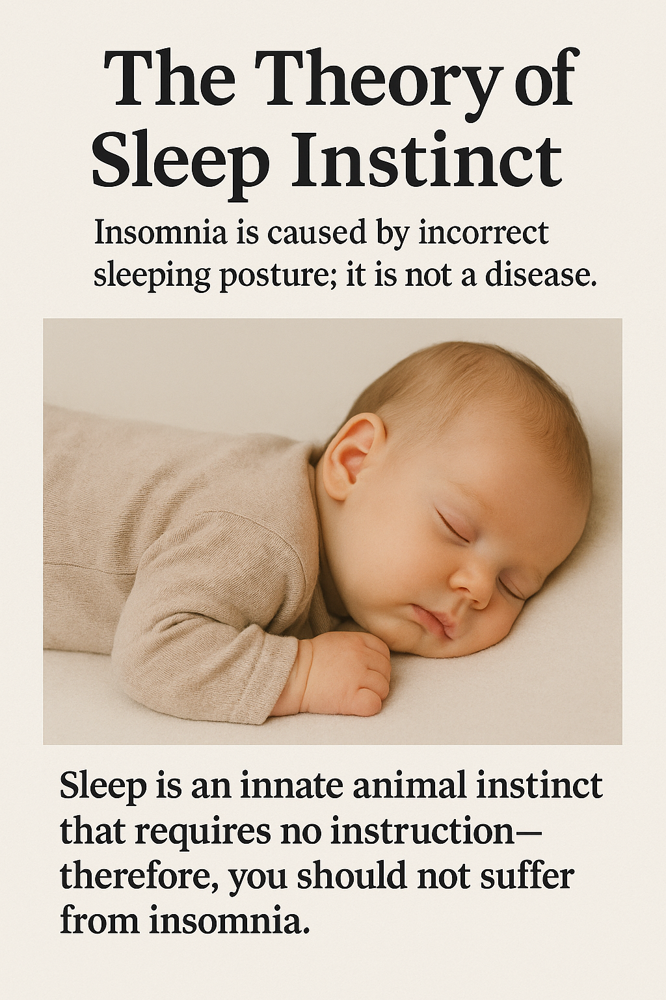

Sleep is not a skill to be taught; it is an innate animal instinct. This theory argues that insomnia is not a disease, but a failure to activate the instinct due to posture errors. Through deductive reasoning and evolutionary analysis, the model defines prone posture as the signal that reactivates natural sleep mechanisms.
睡眠不是技能，而是動物天性的本能。本理論指出：失眠不是疾病，而是因姿勢錯誤導致本能無法啟動。透過正向的論言與演化解釋，本理論建立了以「躺姿」為解碼關鍵的睡眠模型。
